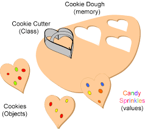
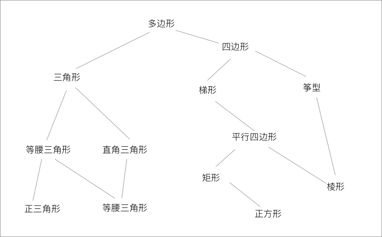

<p style="font-size: 16px; color: #999; margin:5px; position: absolute;"><a href="..">Homepage</a> | <a href="?print-pdf">Printable Version</a></p> <div style="display: flex; justify-content: center; align-items: center; height: 700px;"> <div style="text-align: center; padding: 40px; background-color: white; border: 2px solid rgb(0, 63, 163); border-radius: 20px; box-shadow: 0 0 20px rgba(0,0,0,0.1);"> <h1 style="font-size: 48px; font-weight: bold; margin-bottom: 20px; color: #333;">SI100+ 2025 Lecture 7</h1> <p style="font-size: 24px; color: #666;">Python 面向对象</p> <p style="font-size: 16px; color: #999; margin-top: 20px; margin-bottom:5px">SI100+ 2025 Staff | 2025-08-16</p> </div> </div> <!--s--> ## 目录 - 前言：抽象 - 数据抽象 - 有结构的数据 - 打包在一起 - 类 - 类的声明 - 类的实例化与成员 - 所谓的面向对象编程 - 封装 - 继承 - 多态 <!--v--> ## 太抽象了，你说对不？ - 我们正在用的电脑是一个复杂的系统：硅，集成电路，操作系统，应用程序…… - 通过设计各种交互手段（键盘、鼠标、软件窗口），电脑的设计细节被隐藏起来了。<!-- .element: class="fragment" --> - 于是我们并不需要懂这些东西就可以用电脑了！<!-- .element: class="fragment" --> - “抽象 (Abstraction)” 就是“我不关心”。<!-- .element: class="fragment" --> - 在处理一个复杂系统时，我们只需要关注它的输入和输出，而不必了解内部的实现细节。 <!-- .element: class="fragment" --> <div class="fragment"> </div> <!--s--> <div class="middle center"> <div style="width: 100%"> # Part.1 数据抽象 </div> </div> <!--v--> ## 有结构的数据 - 你已经了解了 Python 的基础操作 - 假如你要写一个日历，需要实现什么功能？ <br/> <div class="fragment"> - 保存当前的年月日 $\to$ 变量 - 更新、显示时间 $\to$ 函数 </div> <div class="fragment"> ```python year = 2025 month = 8 day = 16 def set_time(new_year, new_month, new_day): global year, month, day year = new_year month = new_month day = new_day ``` **演示**：Notebook 示例 7.1.1 </div> <!--v--> ## 有结构的数据 假如现在你要把日历改写成时钟？ ```python year = 2025 month = 8 day = 16 hour = 19 minute = 20 second = 0 def set_time(new_year, new_month, new_day, new_hour, ...): ... ``` - 好像还挺简单的？<!-- .element: class="fragment" --> <div class="fragment"> <b>演示</b>：Notebook 示例 7.1.2 </div> <!--v--> ## 有结构的数据 好的，现在问题来了。 - 创建 100 个时钟 - 每个时钟都有自己的不同的（好几个）闹钟时间 - 看来要声明很多变量了 ```python clock_1_year = 2025 clock_1_month = 8 clock_1_day = 16 clock_1_hour = 19 clock_1_minute = 20 clock_1_second = 0 clock_2_year = 2025 clock_2_month = 8 ... ``` 好麻烦啊。 <!--v--> ## 有结构的数据 家里东西太多了怎么办？ - 断舍离！可是我也不能丢掉数据啊，还有用的 <!-- .element: class="fragment" --> - 找个柜子装起来 <!-- .element: class="fragment" --> <div class="fragment"> 前面已经学过的**列表、元组**。 ```python clock_1 = [2025, 8, 16, 19, 20, 0] clock_2 = [2025, 8, 16, 20, 00, 0] my_clocks = [clock_1, clock_2] def set_time(clock, new_time): for i in range(len(clock)): clock[i] = new_time[i] ``` **演示**：Notebook 示例 7.1.3 </div> <!--v--> ## 有结构的数据 我希望这种“列表”更厉害一点！ - 时间的加法能不能像列表拼接一样，用 `+` 运算符实现？ - 现在获取时间每一项用的是下标，我该怎么知道第一个元素代表的是年份还是小时？ - 为了防止不小心写错时间，我在函数 `set_time` 里面加入了验证时间格式是否正确，但是如果这样写，我就应该防止这个函数之外的语句修改时钟列表里面的元素，该怎么办？ </br> <div class="fragment"> Python 中有**类**的概念，可以将相关的数据和操作封装在一起。 </div> <!--s--> <div class="middle center"> <div style="width: 100%"> # Part.2 类 </div> </div> <!--v--> ## 所以，什么是一个类？ 类可以看作是一种“模板” - 模板规定了它创建出的东西“应该怎么样” - 时钟应该有许多个整型变量，代表储存的时间信息。 - 模板让我们能更快的创建出“东西” - 我们可以通过类来创建出很多个时钟。 - 在设计的时候，使用不同的模板实现不同的功能 - `list` 类用于储存多个元素，`dict` 类用于储存键值对。  <!--v--> ## 类的声明 和声明函数类似，类的声明使用 `class` 关键字。 ```python class Clock: ... ``` <div class="fragment"> 为了让时钟能存储时间，我们需要在模板中表明“我想要给时钟创建几个变量”。 ```python class Clock: year = 2025 month = 8 day = 16 ``` 但是这似乎不太符合我们的逻辑，`class Clock` 应该是一个空模板，而 `year, month, day` 等变量是用模板造出一个具体的东西的时候才有具体的值的。 我们应该合理的区分什么是模板里面的，什么是模板创造出的东西的。 </div> <!--v--> ## 类的实例化与成员 我们称用类这个模板批量创造出的东西为 **实例 (instance)** ，创建实例的过程称为**实例化**。 - 类：饼干模具；实例：饼干 - `[1, 2, 3]` 就是一个 `list` 类的实例。 - 一个类可以有很多不同的实例，如 `[2, 4, 6, 8]` 也是一个 `list` 类的实例。 实例化应该是代码能描述的过程，于是在 Python 中，我们用一种特殊的函数表示“如何实例化”。 ```python class Clock: # __init__ 函数定义在有一层缩进的位置, 代表这个函数归属于 Clock 类 def __init__(self, year, month, day): self.year = year self.month = month self.day = day ``` <!--v--> ## 类的实例化与成员 ```python class Clock: def __init__(self, year, month, day): self.year = year self.month = month self.day = day ``` 在编写了 `__init__` 方法后，我们就可以用类来创建实例了。 ```python clock1 = Clock(2025, 8, 16) ``` 像函数调用那样，但是这里函数名被换成了类名。 在类中的函数称为 **方法 (method)** 。 <!--v--> ## 类的实例化与成员 ```python class Clock: def __init__(self, year, month, day): self.year = year ... ``` **新东西 1：点 (.)** <ul> <li> 假如我们现在有很多个 <code>Clock</code> 的实例 </li> <li class="fragment"> 每个实例都有自己的 <code>year</code> <code>month</code> <code>day</code> 属性 </li> <li class="fragment"> 该如何访问特定一个实例的特定属性？ </li> </ul> <div class="fragment"> 回想我们之前见过的类和实例，比如 `str`, `list`: **演示**：Notebook 示例 7.2.1, 7.2.2, 7.2.3 </div> <div class="fragment"> 可以发现，`a.b` 就是“从 `a` 中获取 `b` 属性”。 </div> <!--v--> ## 类的实例化与成员 ```python class Clock: def __init__(self, year, month, day): self.year = year ... ``` **新东西 2：self** - 该怎么说明我想访问的不是模板而是实例里面的东西？ - **演示**：Notebook 示例 7.2.4, 7.2.5 <!--v--> ## 类的实例化与成员 现在我们终于可以解释上面的代码在做什么了： ```python class Clock: def __init__(self, year, month, day): self.year = year self.month = month self.day = day clock1 = Clock(2025, 8, 16) ``` - `__init__`：创建一个实例时被调用的特殊方法 - `self`：表示当前实例 - `self.year`、`self.month`、`self.day`：实例的属性 - `self.year = year`：为当前实例添加属性 `year`，并将其值设置为传入的 `year` 参数 - `clock1 = Clock(2025, 8, 16)`：创建一个 `Clock` 类的实例，传入的 `year`、`month` 和 `day` 分别为 2025、8 和 16 <!--v--> ## 类的实例化与成员 在 Python 中，一个类是什么是由它的成员和方法决定的。 - `len()`：尝试调用方法 `__len__`，因此实现了 `__len__` 的类就是“有长度的” - `str()`：尝试调用方法 `__str__` - `+`：尝试调用方法 `__add__` 于是我们可以自己定义一些运算符的行为，例如实现 `__str__` 来让 `Clock` 实例能直接被 `print` 函数打印。 ```python class Clock: def __init__(self, year, month, day): self.year = year self.month = month self.day = day def __str__(self): return f"{self.year}-{self.month:02d}-{self.day:02d}" ``` <!--s--> <div class="middle center"> <div style="width: 100%"> # Part.3 所谓的面向对象编程 </div> </div> <!--v--> ## 封装 我们现在已经能写出一个 `Clock` 类，但是仍然可能遇到两种问题： - 假如我没有写任何合理的方法，用 `Clock` 库的人（或者一天后的你）就会因为忘了每一个成员叫什么而不得不再读一遍代码。 - 因此我们要提供 `Clock.set_time` 和 `Clock.display_time` 方法来简化操作。 - 假如有人在 `set_time` 里提供的时间不合规（如 2025 年 -12 月 -31 日），我们可以用控制流禁止这种操作，但是如果那个人直接使用 `clock1.month = -12` 呢？ - 因此我们需要让一些成员不能被随意访问。 </br> - 封装 (Encapsulation) 就是答案。<!-- .element: class="fragment" --> - 就像把电视机的电路板、显示屏都装进一个外壳里，只留给你遥控器。<!-- .element: class="fragment" --> - 我们把数据（属性）和操作数据的方法打包到类里面，并隐藏内部的实现细节。<!-- .element: class="fragment" --> - 只提供“安全”的接口（方法）给外部使用，防止数据被“乱搞”。<!-- .element: class="fragment" --> <!--v--> ## 封装 在 Python 里，我们主要靠“约定俗成”来实现封装。 - **公有 (public)** ：`self.foo` - 默认就是公有的，谁都可以访问。 - **保护 (protected)** ：`self._bar` (单下划线开头) - “自己人（子类）可以用，其他人最好别碰”。这是一种君子协定。 - **私有 (private)** ：`self.__baz` (双下划线开头) - “只有我自己可以用”。 <br/> **演示**: Notebook 示例 7.3.1 <!--v--> ## 继承 如果我们想在 `Clock` 的基础上，做一个带闹钟功能的 `AlarmClock` 呢？ <ul> <li class="fragment"> 把 <code>Clock</code> 的代码全部复制一遍，然后加上闹钟功能</li> <li class="fragment"> 假如还有其他的一百种时钟都有普通时钟的计时功能，但是又各自有不同的功能呢？</li> <li class="fragment"> 如果 <code>Clock</code> 的代码改了，<code>AlarmClock</code> 也要跟着改。</li> </ul> <div class="fragment"> **继承 (Inheritance)** 允许我们创建一个新类（子类），来“继承”一个已存在类（父类）的全部“家产”（属性和方法）。 - `AlarmClock` 可以继承 `Clock`，直接就拥有了年月日这些属性。 - 代码复用 </div> <!--v--> ## 继承 子类不仅可以继承，还可以发展。 - **添加新功能**：`AlarmClock` 可以添加自己的属性（如 `alarm_time`）和方法（如 `set_alarm`）。 - **改造旧功能（重写）**：如果 `AlarmClock` 想用一种不同的方式来显示时间（比如，如果闹钟响了就闪烁），它可以重写从 `Clock` 继承来的 `display` 方法。 - **调用父类方法**：有时候我们只想在父类方法的基础上加点东西，而不是完全重写。可以用 `super()` 来调用父类的同名方法。 </br> **演示**: Notebook 示例 7.3.2 <!--v--> ## 继承 当然，也有一些更复杂的情况：  鸵鸟是鸟，鸵鸟不会飞，那么基类“鸟”应该实现“飞”吗？ <!--v--> ## 多态 多态 (Polymorphism) 的字面意思是“多种形态”。 - 同一个指令，不同的人（对象）来执行，会产生不同的行为。 - 比如，扫地机器人和普通吸尘器都可以执行“清扫”这个指令，但它们的具体实现方式可能完全不同。 - 整数和字符串都可以 `+`，并且 `+` 可以随着要被相加的是什么类型而有不同的行为。 <!--s--> ## Takeaway Message - 抽象：把无关的细节藏起来，然后我们就能关注更重要的事情。 - 数据抽象：当我们有太多数据的时候，应该用合适的方式将他们组织起来 - 类与实例：类是一种模板，一个类可以创建许多实例 - 成员与方法：类的成员是用来描述实例的属性，方法是用来描述实例的行为，用 `.` 来访问 <!--s--> <div style="display: flex; justify-content: center; align-items: center; height: 700px; "> <div style="text-align: center; padding: 40px; background-color: white; border-radius: 20px; box-shadow: 0 0 20px rgba(0,0,0,0.1);"> <div style="display: inline-block; padding: 20px 40px; border-radius: 10 px; margin-bottom: 20px;"> <h1 style="font-size: 48px; font-weight: bold; margin: 0; color: rgb(16, 33, 89)">Thanks for Listening</h1> </div> <p style="font-size: 24px; color: #666; margin: 0;">Any questions?</p> </div> </div>